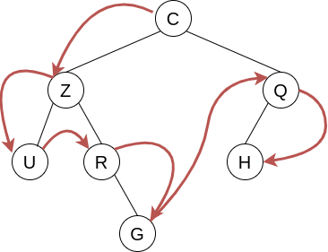
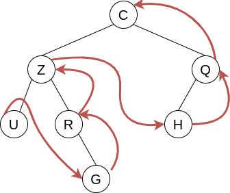
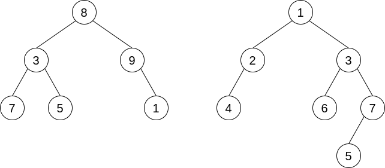
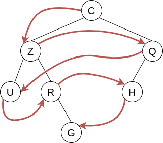
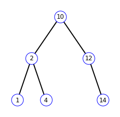

S6 - Ch. 1 Algorithmes sur les arbres
1. Calculer la taille et la hauteur d'un arbre binaire⚓︎
Nous avons déjà rencontré ces algorithmes, sous la forme de programmes Python, dans le chapitre sur les arbres binaires. On s'intéresse ici à leur étude algorithmique.
D'une façon générale, la structure d'arbre binaire est particulièrement adaptée à la mise en œuvre d'algorithmes récursifs. Dans la suite tous les arbres sont binaires.
Taille d'un arbre⚓︎
La taille d'un arbre est son nombre total de nœuds.
Algorithme de calcul de la taille d'un arbre
si arbre est vide alors
retourner 0
sinon
retourner 1 + taille(sous-arbre gauche de arbre) + taille(sous-arbre droit de arbre)
fin si
Hauteur d'un arbre⚓︎
La hauteur d'un arbre est la profondeur de son nœud le plus profond. Par convention, si l'arbre est vide, sa hauteur vaut 0, si l'arbre n'est composé que d'un nœud racine, sa hauteur vaut 1.
Algorithme de calcul de la hauteur d'un arbre
si arbre est vide alors
retourner 0
sinon
retourner 1 + max(hauteur(sous-arbre gauche de arbre), hauteur(sous-arbre droit de arbre))
fin si
2. Parcourir un arbre⚓︎
Remarque : en anglais les parcours en profondeur sont appelés depth-first search (DFS) et les parcours en largeur sont appelés breadth-first search (BFS).
Tous ces algorithmes de parcours ont en commun de visiter tous les sommets d'un arbre, mais pas dans le même ordre. La structure récursive de la structure de données arbre binaire permet de définir très naturellement ces algorithmes de façon récursive. Chacun des algorithmes de parcours sont définis sous forme de fonctions qui comportent deux appels récursifs et qui visitent à chaque fois un seul sommet. Si on note \(n\) la taille de l'arbre (le nombre de sommets), on aura donc pour tous ces algorithmes une complexité en \(\mathcal{O}(n)\).
2.1. Parcours en profondeur avec ordre préfixe⚓︎
Définition : ordre préfixe
On appelle parcours préfixe un parcours dans lequel chaque noeud est visité, puis chacun de ses fils :
- on visite la racine ;
- ensuite on visite récursivement le sous-arbre gauche ;
- enfin on visite récursivement le sous-arbre droit.
Le parcours est dans l'ordre noeud - gauche - droit
Exemple

Ordre de parcours des sommets : C-Z-U-R-G-Q-H.
Algorithme de parcours préfixe en pseudo-code
si arbre n'est pas vide alors
afficher racine de arbre
parcoursPrefixe(sous-arbre gauche de arbre)
parcoursPrefixe(sous-arbre droit de arbre)
fin si
Implémentation en Python : Trois versions sont proposées ci-dessous. La première version est récursive et reprend à l'identique la structure de l'algorithme en pseudo-code. La seconde est également récursive et a été légèrement modifiée pour retourner les sommets visités sous forme d'une liste, ce qui peut être utile pour un traitement ultérieur. La troisième version, plus difficile, est itérative et retourne également les sommets visités sous forme d'une liste. Elle utilise une structure de pile (sous forme de liste).
def parcoursPrefixe(arbre: ArbreBinaire):
if not arbre.estVide():
print(arbre.getRacine())
parcoursPrefixe(arbre.getSousArbreGauche())
parcoursPrefixe(arbre.getSousArbreDroit())
def parcoursPrefixe(arbre: ArbreBinaire, liste = []):
if not arbre.estVide():
liste.append(arbre.getRacine())
parcoursPrefixe(arbre.getSousArbreGauche(), liste)
parcoursPrefixe(arbre.getSousArbreDroit(), liste)
return liste
def parcoursPrefixe(arbre: ArbreBinaire) -> list:
# Si l'arbre est vide, on arrête le parcours
if arbre.estVide():
return []
# Liste pour stocker les valeurs des noeuds
valeurs = []
# Parcours de l'arbre en utilisant une pile
pile = [arbre]
while pile != []:
noeud = pile.pop()
valeurs.append(noeud.getRacine())
# On ajoute les enfants dans la pile dans l'ordre inverse pour
# obtenir le parcours en profondeur préfixe
if not noeud.getSousArbreDroit().estVide():
pile.append(noeud.getSousArbreDroit())
if not noeud.getSousArbreGauche().estVide():
pile.append(noeud.getSousArbreGauche())
# Renvoie la liste des valeurs des noeuds parcourus
return valeurs
Dérouler à la main, en mode papier-crayon, l'exécution de ces trois programmes est un très bon exercice !
2.1. Parcours en profondeur avec ordre infixe⚓︎
Définition : ordre infixe
On appelle parcours infixe un parcours dans lequel chaque noeud est visité entre les noeuds de son sous arbre gauche et ceux de son sous arbre droit :
- on visite récursivement le sous-arbre gauche ;
- ensuite on visite la racine ;
- enfin on visite récursivement le sous-arbre droit.
Le parcours est dans l'ordre gauche - noeud - droit
Exemple

Ordre de parcours des sommets : U-Z-R-G-C-H-Q.
Algorithme de parcours infixe en pseudo-code
si arbre n'est pas vide alors
parcoursInfixe(sous-arbre gauche de arbre)
afficher racine de arbre
parcoursInfixe(sous-arbre droit de arbre)
fin si
Implémentation en Python : Trois versions sont proposées ci-dessous. La première version est récursive et reprend à l'identique la structure de l'algorithme en pseudo-code. La seconde est également récursive et a été légèrement modifiée pour retourner les sommets visités sous forme d'une liste, ce qui peut être utile pour un traitement ultérieur. La troisième version, plus difficile, est itérative et retourne également les sommets visités sous forme d'une liste. Elle utilise une structure de pile (sous forme de liste).
def parcoursInfixe(arbre: ArbreBinaire):
if not arbre.estVide():
parcoursInfixe(arbre.getSousArbreGauche())
print(arbre.getRacine())
parcoursInfixe(arbre.getSousArbreDroit())
def parcoursInfixe(arbre: ArbreBinaire, liste = []):
if not arbre.estVide():
parcoursInfixe(arbre.getSousArbreGauche(), liste)
liste.append(arbre.getRacine())
parcoursInfixe(arbre.getSousArbreDroit(), liste)
return liste
def parcoursInfixe(arbre: ArbreBinaire) -> list:
# Si l'arbre est vide, on arrête le parcours
if arbre.estVide():
return []
# Liste pour stocker les valeurs des noeuds
valeurs = []
# Parcours de l'arbre en utilisant une pile
pile = []
noeud = arbre
while not noeud.estVide() or pile != []:
# Si l'on a atteint une feuille, on récupère la valeur et on revient en arrière
if noeud.estVide():
noeud = pile.pop()
valeurs.append(noeud.getRacine())
noeud = noeud.getSousArbreDroit()
else:
# Sinon, on parcourt le sous-arbre gauche et on enregistre l'état actuel
# pour pouvoir revenir plus tard
pile.append(noeud)
noeud = noeud.getSousArbreGauche()
return valeurs
Dérouler à la main, en mode papier-crayon, l'exécution de ces trois programmes est un très bon exercice !
2.3. Parcours en profondeur avec ordre suffixe⚓︎
Définition : ordre suffixe
On appelle parcours suffixe (ou postfixe) un parcours dans lequel chaque noeud est visité après les noeuds de son sous arbre gauche et ceux de son sous arbre droit :
- on visite récursivement le sous-arbre gauche ;
- ensuite on visite récursivement le sous-arbre droit ;
- ensuite on visite la racine.
Le parcours est dans l'ordre gauche - droit - noeud
Exemple

Ordre de parcours des sommets : U-G-R-Z-H-Q-C.
Algorithme de parcours suffixe en pseudo-code
si arbre n'est pas vide alors
parcoursSuffixe(sous-arbre gauche de arbre)
parcoursSuffixe(sous-arbre droit de arbre)
afficher racine de arbre
fin si
Exercice
Voici deux arbres binaires. Pour chacun d'entre eux, indiquer l'ordre de parcours des sommets pour chacun de types de parcours en profondeur définis ci-dessus.

Implémentation en Python : Trois versions sont proposées ci-dessous. La première version est récursive et reprend à l'identique la structure de l'algorithme en pseudo-code. La seconde est également récursive et a été légèrement modifiée pour retourner les sommets visités sous forme d'une liste, ce qui peut être utile pour un traitement ultérieur. La troisième version, plus difficile, est itérative et retourne également les sommets visités sous forme d'une liste. Elle utilise une structure de pile (sous forme de liste).
def parcoursSuffixe(arbre: ArbreBinaire):
if not arbre.estVide():
parcoursSuffixe(arbre.getSousArbreGauche())
parcoursSuffixe(arbre.getSousArbreDroit())
print(arbre.getRacine())
def parcoursSuffixe(arbre: ArbreBinaire, liste = []):
if not arbre.estVide():
parcoursSuffixe(arbre.getSousArbreGauche(), liste)
parcoursSuffixe(arbre.getSousArbreDroit(), liste)
liste.append(arbre.getRacine())
return liste
def parcoursSuffixe(arbre: ArbreBinaire) -> list:
# Si l'arbre est vide, on arrête le parcours
if arbre.estVide():
return []
# Liste pour stocker les valeurs des noeuds
valeurs = []
# Parcours de l'arbre en utilisant une pile
pile = [arbre]
while pile != []:
# On dépile et on note l'élément en haut de la pile
noeud = pile.pop()
valeurs.append(noeud.getRacine())
# On empile les sous arbres gauche et droits s'ils existent
# Droit sera traité avant Gauche car on parcours à l'envers
if not noeud.getSousArbreGauche().estVide():
pile.append(noeud.getSousArbreGauche())
if not noeud.getSousArbreDroit().estVide():
pile.append(noeud.getSousArbreDroit())
# On remet à l'endroit
valeurs.reverse()
return valeurs
Dérouler à la main, en mode papier-crayon, l'exécution de ces trois programmes est un très bon exercice !
2.4. Parcours en largeur d'abord⚓︎
Définition : parcours en largeur d'abord
On appelle parcours en largeur d'abord un parcours dans lequel les noeuds sont visités par ordre de niveaux croissant, de gauche à droite.
Exemple

Ordre de parcours des sommets : C-Z-Q-U-R-H-G.
Le parcours en largeur est simple à comprendre visuellement, mais il est plus difficile à traduire par un algorithme, car il n'exploite pas la définition récursive des arbres binaires.
Nous utiliserons une file pour effectuer le parcours en largeur d'un arbre binaire.
Algorithme de parcours en largeur en pseudo-code
créer une liste de résultats vide
si arbre n'est pas vide alors
créer une file vide
ajouter arbre à la file
tant que la file n'est pas vide faire
noeud \(\leftarrow\) défiler le premier élément de la file
ajouter l'étiquette de noeud à la liste de résultats
si noeud a un fils gauche alors
ajouter le fils gauche de noeud à la file
fin si
si noeud a un fils droit alors
ajouter le fils droit de noeud à la file
fin si
fin tant que
fin si
retourner la liste de résultats
Traduction en Python :
def parcoursLargeur(arbre: ArbreBinaire()) -> list:
valeurs = []
if not arbre.estVide():
file = []
file.append(arbre)
while file != []:
noeud = file.pop(0)
valeurs.append(noeud.getRacine())
if not noeud.getSousArbreGauche().estVide():
file.append(noeud.getSousArbreGauche())
if not noeud.getSousArbreDroit().estVide():
file.append(noeud.getSousArbreDroit())
return valeurs
Une fois encore, dérouler à la main, en mode papier-crayon, l'exécution de ce programme est un très bon exercice !
3. Insertion d'une clef dans un arbre de recherche⚓︎
On s'intéresse maintenant aux arbres binaires de recherche.
Nous avons déjà utilisé cette structure de données dans la séquence 4 sur les arbres. Notre module structures.py définit la structure d'arbre binaire de recherche par une classe ABR qui possède une méthode insere qui insère une clef dans l'arbre en préservant la structure ABR.
Voici en pseudo-code l'algorithme utilisé par cette méthode. L'insertion d'une clef va se faire au niveau d'une feuille, donc au bas de l'arbre. Il n'est pourtant pas nécessaire de descendre manuellement dans l'arbre jusqu'au bon endroit car nous exploitons la structure à la fois récursive et ordonnée d'un ABR : il suffit de distinguer dans lequel des deux sous-arbres gauche et droit doit se trouver la future clef, et d'appeler récursivement la fonction d'insertion dans le sous-arbre en question.
Algorithme de parcours en largeur en pseudo-code
si arbre est vide alors
définir la racine de arbre avec valeur comme clef
retourner arbre
sinon
clef \(\leftarrow\) clef de la racine de arbre
si valeur est inférieure ou égale à clef
sous-arbre gauche de arbre \(\leftarrow\) insere(sous-arbre gauche de arbre, valeur)
sinon
sous-arbre droit de arbre \(\leftarrow\) insere(sous-arbre droit de arbre, valeur)
fin si
fin si
retourner arbre
Exercice
On considère l'ABR représenté ci-dessous. Dérouler à la main l'exécution de l'algorithme ci-dessus pour insérer la valeur 3 dans cet arbre, puis la valeur 11.

4. Recherche d'une clef dans un arbre de recherche⚓︎
Notre module structure.py, dans sa version définitive, comporte une fonction appartient_ABR qui teste l'appartenance d'un élément donné en argument à un ABR donné en argument et renvoie un booléen.
Voici le code Python de cette fonction.
def appartientABR(element, arbre) -> bool:
"""teste l'appartenance d'un élément à un ABR"""
if arbre is None:
return False
elif element == arbre.getRacine():
return True
else:
if arbre.getRacine() is not None:
if element < arbre.getRacine():
return appartientABR(element, arbre.getSousArbreGauche())
else:
return appartientABR(element, arbre.getSousArbreDroit())
Cette fonction exploite à la fois la structure récursive et la structure ordonnée d'un ABR afin de n'effectuer qu'un appel récursif à chaque passage.
Déterminons une évaluation de sa complexité temporelle, dans le pire des cas, dans le cas particulier d'un arbre équilibré.
On note \(n\) la taille de l'arbre, c'est-à-dire son nombre de noeuds. Au départ, nous avons donc \(n\) noeuds à explorer. Après chaque examen d'un noeud, le nombre de noeuds restant à explorer est divisé par 2.

Dans le pire des cas, il faudra parcourir tous les étages de l'arbre pour trouver la clef (qui est alors une feuille) ou pour constater qu'elle n'est pas dans l'arbre. On va donc parcourir au total \(h\) noeuds, où \(h\) est la hauteur de l'arbre.
Or, nous avons vu que pour un arbre complet, nous avons la relation : \(n=2^h-1\) équivalente à \(2^h=n+1\) et donc \(h=\log_2(n+1)\).
La complexité de la recherche d'une valeur dans un ABR est donc en \(\mathcal{O}(log_2(n))\). Il s'agit d'une complexité très performante : par exemple, pour un arbre de taille 10000, 14 étapes suffiront.
À retenir
La complexité temporelle de la recherche d'une valeur dans un ABR équilibré est de l'ordre de \(\log_2(n)\).
Remarque :
- Cet algorithme est à rapprocher de l'algorithme de recherche dichotomique d'une valeur dans un tableau trié, étudié en première.